Inhalt Index DeskTop Bronstein

 Algebra und Diskrete Mathematik Elementare Zahlentheorie Teilbarkeit
Algebra und Diskrete Mathematik Elementare Zahlentheorie Teilbarkeit


| Beispiel |
|
(3,5), (5,7), (11,13), (17,19), (29,31), (41,43), (59,61), (71,73), (101,103) sind Primzahlzwillinge. |
| Beispiel |
|
(5,7,11), (7,11,13), (11,13,17), (13,17,19), (17,19,23), (37,41,43) sind Primzahldrillinge. |
| Beispiel |
|
(5,7,11,13), (11,13,17,19), (101,103,107,109), (191,193,197,199) sind Primzahlvierlinge. |
Eine bis heute unbewiesene Vermutung ist, daß unendlich viele Primzahlzwillinge, unendlich viele Primzahldrillinge und unendlich viele Primzahlvierlinge existieren.
| Beispiel |
|
Für die folgenden ersten 10 Werte von p ist 2p-1 eine Primzahl: 2, 3, 5, 13,17, 19, 31, 61, 89, 107, usw. |
| Beispiel |
|
Für k=0,1,2,3,4 sind die zugehörigen FERMATschen Primzahlen: 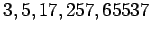. Man vermutet, daß es keine weiteren FERMATschen Primzahlen gibt. |
| Beispiel |
|
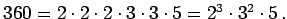 |
Hinweis: Analog kann man ganze Zahlen (außer -1, 0, 1) eindeutig bis auf Vorzeichen und Reihenfolge der Faktoren als Produkt von Primelementen darstellen.
| Beispiel |
|
Zu 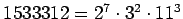 gehört die Exponentenfolge 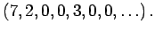 |
Für eine natürliche Zahl n seien 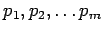 die paarweise verschiedenen n teilenden Primzahlen, und  bezeichne den Exponenten der Primzahl pk in der Primfaktorenzerlegung von
bezeichne den Exponenten der Primzahl pk in der Primfaktorenzerlegung von  . Dann schreibt man
. Dann schreibt man
und nennt diese Darstellung die kanonische Primfaktorenzerlegung von 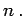 Oft schreibt man dafür auch
| 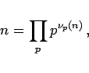 | (5.249b) |
wobei das Produkt über alle Primzahlen p zu bilden ist und 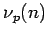 die Vielfachheit von p als Teiler von n bedeutet. Es handelt sich um ein endliches Produkt, da nur endlich viele der Exponenten von 0 verschieden sind.
| 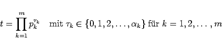 | (5.250a) |
darstellen. Die Anzahl 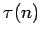 aller positiven Teiler von n ist
| 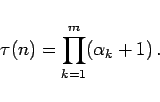 | (5.250b) |
| Beispiel A |
|
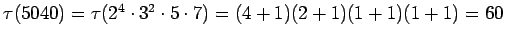. |
| Beispiel B |
|
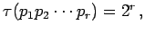 falls 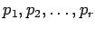 paarweise verschiedene Primzahlen sind. |
Das Produkt P(n) aller positiven Teiler von n ist gegeben durch
| 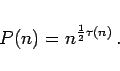 | (5.250c) |
| Beispiel A |
|
P(20)=203=8000. |
| Beispiel B |
|
P(p3)=p6, falls p Primzahl ist. |
| Beispiel C |
|
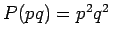, falls p und q zwei verschiedene Primzahlen sind. |
Die Summe 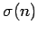 aller positiven Teiler von n ist
| 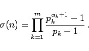 | (5.250d) |
| Beispiel A |
|
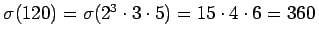. |
| Beispiel B |
|
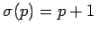, falls p Primzahl ist. |